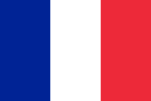

Hello World
A program to greet the planet.
This page is an attempt to greet everyone on Earth using our various human languages. We're interested to see how long our list can become.
We'll start with languages that the Epicodus staff could offer without using Google.
- English: Hello, world!

- Spanish: Hola, mundo!

- Japanese: Konnichiwa, sekai!

- French: Bonjour, monde! 
- Kinyarwanda: Mwirwe, isi!

- German: Guten tag, Welt!

- Pig Latin: ello-hay, orld-way!